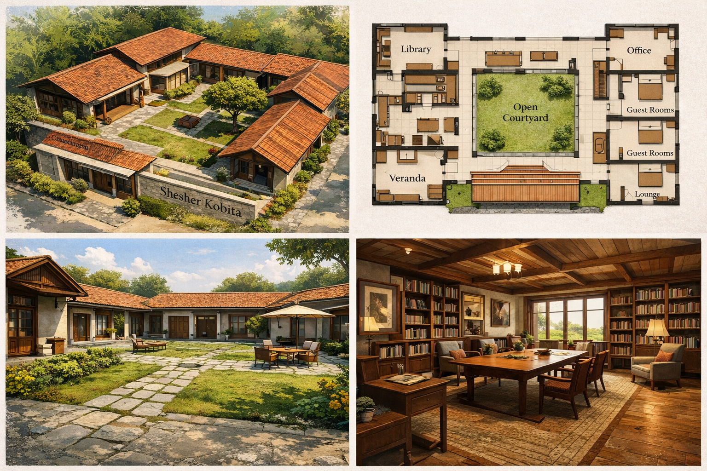
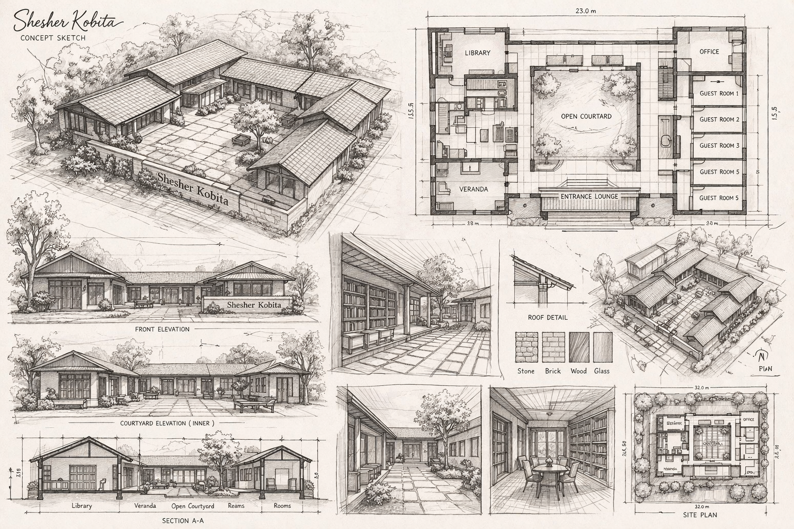

Library and reading room
Quiet shelves, warm wood textures, and inviting seating for long afternoons with books.
Shesher Kobita is imagined as an intimate destination for reflection, rest, and reconnection—framed by courtyards, books, gardens, prayer access, and easy proximity to Dhaka and trusted healthcare.
The concept
The Shesher Kobita concept pairs open-air village stillness with a refined hospitality experience. The architecture centers around a courtyard so every room feels connected to sunlight, conversation, and gardens while maintaining a gentle sense of privacy.
The palette draws directly from the logo—layered greens, crisp white space, and deep charcoal accents—creating an atmosphere that feels restorative, elegant, and easy to inhabit on both quick getaways and longer reflective stays.
Prominent concept visuals


Facilities
Quiet shelves, warm wood textures, and inviting seating for long afternoons with books.
Private accommodations arranged around the courtyard for calm views and easy circulation.
Central outdoor space for sunlight, conversation, tea, and gentle evening breezes.
Welcoming arrival, administration support, and flexible shared areas for family and guests.
Wellbeing and lifestyle
Landscaped paths, birdsong, filtered light, and a slower pace create a deeply restful environment.
Close enough to Dhaka for convenience, while still offering reassuring access to trusted medical care.
Seasonal produce, gentle flavors, and garden-forward meals that support comfort and wellness.
Reading, reflective walks, courtyard gatherings, gardening moments, and peaceful creative time.
Respectful planning allows guests to maintain spiritual routines with convenient mosque access nearby.
Reservation contact
For reservations, concept inquiries, and partnership conversations, please contact shesherkobita@gmail.com.